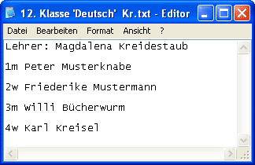
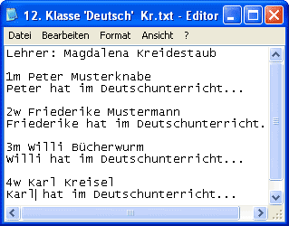
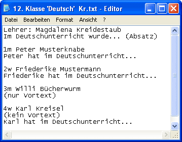
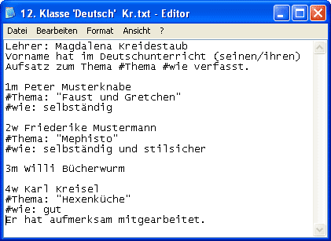

Texel-Hilfe

Einleitung
Beispiele
Überblick
Installation
Organisation
Einstellungen
Schülerdaten
Layout
Dateivorlagen
Schreiben
Einlesen
Korrigieren
Ausdrucken
Archivieren
Kontakt
Eine Zeugnisverwaltung für Waldorfschulen
Jeder Kollege bekommt eine Diskette mit Dateivorlagen für seine Fächer und kann diese mit jedem Texteditor, auch mit Word, bearbeiten.
Zeugnistexte schreiben
Vortexte
Lückentexte
Absätze und Leerzeilen
Zeugnistexte schreiben

Im Dateinamen der Dateivorlagen finden Sie die Klasse, den Fachnamen in einfachen Anführungzeichen und das Kürzel des Lehrers. Soll das Fach im Zeugnis unter einem anderen Namen erscheinen, kann der Dateiname entsprechend geändert werden. Die Texte werden dann beim Einlesen unter diesem neuen Fachnamen abgespeichert. Allerdings muss dann der Eintrag dieses Faches im Layout geändert werden, da sonst die Texte zu diesem Fach nicht gedruckt werden. Sie erhalten aber auch vor dem Drucken noch eine Warnung, dass für den neuen Fachnamen ein Layouteintrag fehlt.
Die Dateivorlage enthält in der ersten Zeile den Lehrernamen. Dieser kann auch geändert werden; dieser Lehrername wird beim Einlesen der Datei in die Datenbank als Lehrer für dieses Fach gespeichert, auch wenn er von dem Namen im Layout abweicht.
Es folgt eine Schülerzeile für jeden Schüler: Diese enthält zuerst die Schülernummer. Diese darf auf keinen Fall verändert werden, weil sonst die Zuordnung der Texte schwierig werden kann. Es folgt das Geschlecht des Schülers. Dies wird nur vom Lückentexteditor Lucky benötigt, um die Lücken richtig zu füllen. Der Lehrer soll im Zeugnistext den Vornamen des Schülers benutzen, der in der Schülerzeile aufgeführt wird, damit alle Zeugnisse einheitlich werden. Es ist der Vorname, der in der Datenbank eingegeben wurde, nicht der vollständige Vorname für das Titelblatt.

Nun kann der Lehrer unter jeder Schülerzeile in eine neue Zeile den Text für den Schüler schreiben. Beim Schreiben mit Word ist darauf zu achten, die Datei als Textdatei mit der Endung .txt und nicht als Worddokument mit der Endung .doc zu speichern. Später können die Doc-Dateien aber auch noch umgewandelt werden.
Den Texten können Kommentare hinzugefügt werden, die nicht eingelsen werden. Dazu klammert man einen ganzen Absatz ein.
Leerzeilen und Einzüge am Zeilenanfang werden beim Einlesen gelöscht, um ein einheitliches Druckbild zu erhalten. Ausnahme bilden die Zeugnissprüche. Hier sind Leerzeilen zur Gliederung der Strophen möglich. Einzüge werden ebenfalls gelöscht, da die Sprüche zentriert gedruckt werden. Die Zeile Für Peter brauchen Sie auch nicht angegeben, sie wird automatisch mit ausgedruckt.
Vortexte

Zwischen der Lehrerzeile und der ersten Schülerzeile kann ein Vortext geschrieben werden, der jedem Schülertext vorangestellt wird. Der Schülertext wird ohne einen Zeilenumbruch an den Schülertext angefügt, wenn der Vortext nicht den Befehl (Absatz) oder kurz (+) am Ende enthält.
Soll ein Schüler keinen Vortext erhalten, muss vor dem Schülertext der Befehl (kein Vortext) oder kurz (---) in einem eigenen Absatz stehen.
Besitzt ein Schüler keinen individuellen Text, erhält er auch keinen Vortext, es sei denn unter der Schülerzeile steht der Befehl (nur Vortext) in einem eigenem Absatz.
Lückentexte

Alle Lückentextfunktionen lassen sich einfacher mit dem Lückentexteditor Lucky benutzen. Diese Informationen beschreiben die Möglichkeiten Lückentexte ohne Lucky zu verfassen:
Der Vortext kann auch einfach als Vorlage für einen Lückentext benutzt werden.
Die Platzhalter Vorname oder Vornames werden beim Einlesen der Texte durch den Vornamen des Schülers bzw durch den Genitiv des Schülernamens ersetzt.
Geschlechtsabhängige Ausdrücke werden als Beispiel so angegeben: (Er/Sie), (sein/ihr) usw.
Andere Lücken werden benannt, indem dem Namen das Zeichen # vorangesetzt wird. Wie die Lücken für jeden Schüler gefüllt werden sollen, muss dann nach der Schülerzeile in einer eigenen Zeile angegeben werden. Im Beispiel sehen Sie wie.
Im obigen Beispiel erhalten die Schüler also folgende Texte:
Peter hat im Deutschunterricht seinen Aufsatz zum Thema "Faust und Gretchen" selbständig verfasst.
Friederike hat im Deutschunterricht ihren Aufsatz zum Thema "Mephisto" selbständig und stilsicher verfasst.
Karl hat im Deutschunterricht seinen Aufsatz zum Thema "Hexenküche" gut verfasst. Er hat aufmerksam mitgearbeitet.
Beachten Sie, dass Willi keinen Text bekommt, und dass bei Peter und Friederike der Befehl (nur Vortext) nicht nötig ist, da ja Lückentexte angegeben sind. Karl braucht diesen Befehl sowieso nicht, da noch ein individueller Text folgt.
Die benannten Lücken können auch durch ganze Sätze gefüllt werden. Ist bei dem Schüler keine Ersetzung angeben, bleibt die Lücke leer. So kann auch mit Satzbausteinen gearbeitet werden.
Absätze und Leerzeilen
In Zeugnissprüchen werden Absätze und Leerzeilen übernommen. In Klassenlehrertexten die Absätze, in Fachzeugnissen werden alle Absätze und Leerzeilen entfernt.
Sie können das beeinflussen indem Sie direkt unter die Lehrerzeile eine eigene Zeile: (Absätze) bzw. (Leerzeilen) einfügen. Dann werden auf jeden Fall Absätze bzw. Leerzeilen und damit auch Absätze übernommen. Soll nur ein einzelner Absatzumbruch übernommen werden schreiben Sie als letztes in den Absatz (Absatz).